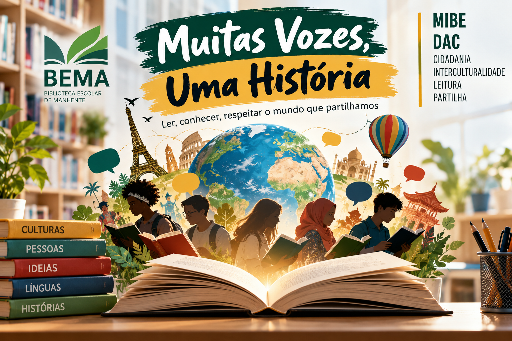

Muitas Vozes, Uma História
«Quem somos nós, que histórias trazemos connosco e como podemos construir uma escola onde todas as vozes contam?»
De onde nasce?
A proposta nasce no âmbito do Mês Internacional da Biblioteca Escolar (MIBE), a partir da linha «Diversidade e Vozes Globais: Many Voices, One Story». O desafio é olhar para a escola em todas as direções e descobrir as histórias, línguas, memórias e percursos das pessoas que a constituem.
Inspira-se no projeto Humans of New York, adaptando à escola a ideia de cruzar retratos de pessoas reais com pequenos testemunhos e histórias de vida. Os alunos podem entrevistar, escutar, escrever, traduzir, fotografar, ilustrar e editar pequenas narrativas sobre quem partilha diariamente o mesmo espaço escolar.
O que é?
Um DAC transversal, coordenado pela Biblioteca Escolar, que transforma a diversidade cultural e linguística da escola num recurso de aprendizagem. A partir de retratos e pequenas histórias de pessoas reais da comunidade escolar, os alunos recolhem e trabalham testemunhos, palavras, lugares, memórias e leituras, construindo progressivamente um retrato coletivo e plural da escola.
Para quê?
- Valorizar as diferentes línguas, culturas e percursos presentes na escola.
- Desenvolver empatia, escuta ativa, competência intercultural e respeito pela diferença.
- Reforçar a inclusão, o sentimento de pertença e a coesão da comunidade escolar.
- Trabalhar leitura, escrita, oralidade, pesquisa, literacia dos média e produção multimodal em contexto real.
Como pode cada disciplina participar?
Não é necessário desenvolver um projeto paralelo. Cada professor pode integrar uma pequena tarefa curricular, como:
- preparar perguntas e realizar entrevistas;
- escrever ou rever um retrato;
- traduzir palavras e expressões;
- construir mapas e trabalhar migrações e Direitos Humanos;
- tratar dados;
- produzir fotografia ou ilustração;
- editar conteúdos digitais;
- explorar leituras relacionadas com identidade e diversidade.
Um projeto ao longo do ano
O projeto é lançado no MIBE e desenvolve-se de forma modular ao longo do ano. Cada turma ou disciplina pode participar apenas numa etapa, tornando a participação simples e flexível.
Produto final
Exposição «Muitas Vozes, Uma História: Retratos da nossa escola», reunindo retratos, pequenos textos, palavras em várias línguas, mapas, leituras e outros elementos produzidos pelos alunos.
O que assegura a Biblioteca?
Planificação e coordenação global, guiões de entrevista e pesquisa, apoio às literacias, materiais-modelo, curadoria e edição, articulação entre contributos, montagem e divulgação da exposição.
Participação
Os docentes interessados podem escolher uma tarefa ou etapa compatível com os conteúdos da sua disciplina e articulá-la com a Biblioteca Escolar. O objetivo é que o DAC seja leve na logística, curricularmente útil e verdadeiramente coletivo.